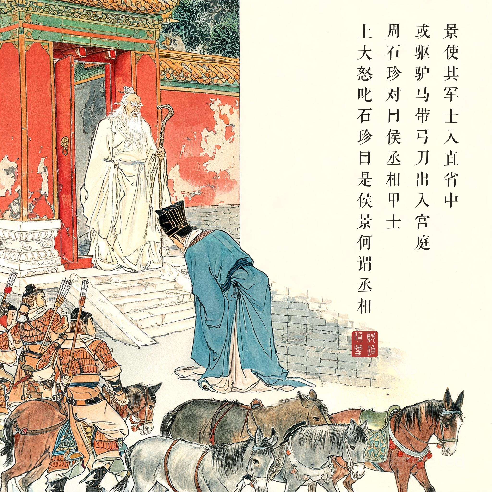
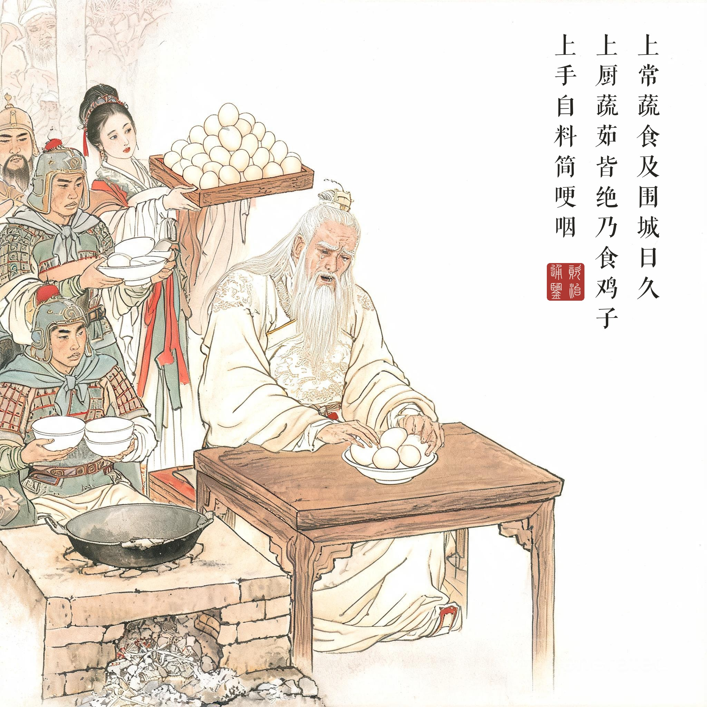
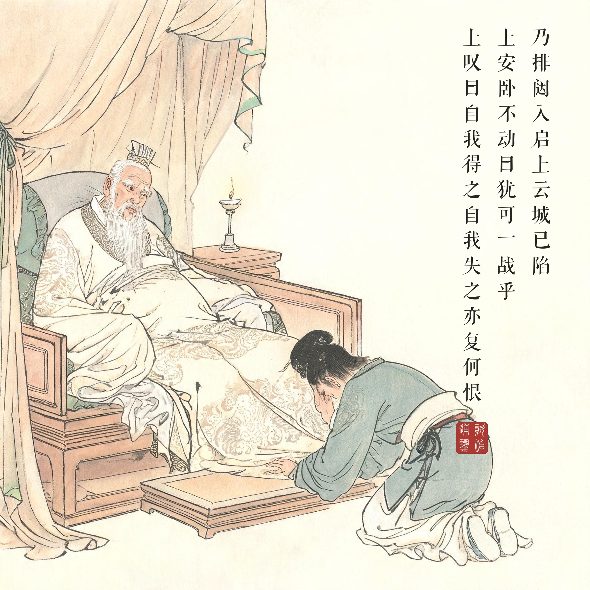
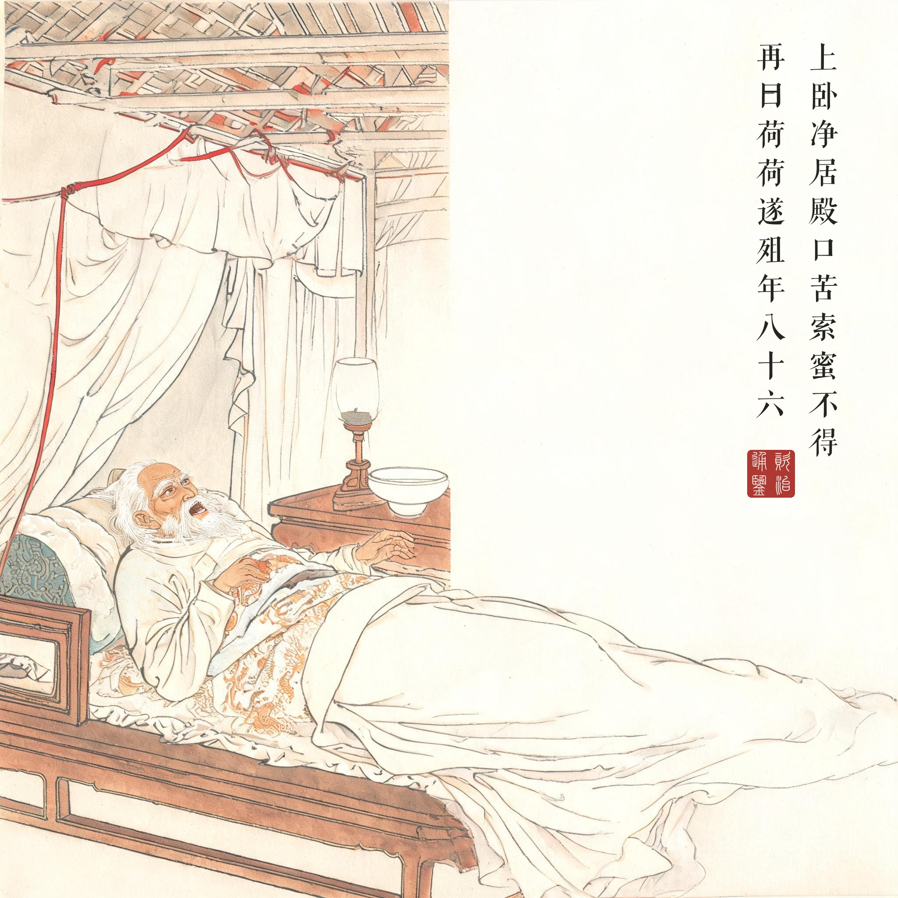

《资治通鉴 · 卷第一百六十二 · 梁纪十八》高祖武皇帝十八太清三年（公元 549 年）
（据 daizhigev20《资治通鉴》底本节录。台城被围自太清二年十月始，至三年五月陷落，本回节录围城末期诸帧）
景使其军士入直省中，或驱驴马，带弓刀，出入宫庭，上怪而问之，直閤将军周石珍对曰：“侯丞相甲士。”上大怒，叱石珍曰：“是侯景，何谓丞相！”左右皆惧。……上常蔬食，及围城日久，上厨蔬茹皆绝，乃食鸡子。纶因使者暂通，上鸡子数百枚，上手自料简，歔欷哽咽。……（城陷）乃排闼入启上云：“城已陷。”上安卧不动，曰：“犹可一战乎？”对曰：“不可。”上叹曰：“自我得之，自我失之，亦复何恨！”因谓确曰：“汝速去，语汝父，勿以二宫为念。”……上虽外为侯景所制，而内甚不平。景欲以宋子仙为司空，上曰：“调和阴阳，安用此物！”景又请以其党二人为便殿主帅，上不许。景不能强，心甚惮之。……是后上所求多不遂志，饮膳亦为所裁节，忧愤成疾。……五月，丙辰，上卧净居殿，口苦，索蜜不得，再曰：“荷！荷！”遂殂。年八十六。
侯景让他的军士进宫省当值，有人赶着驴马、带着弓刀出入宫庭，皇帝奇怪地问，直閤将军周石珍回答：“是侯丞相的甲士。”皇帝大怒，叱石珍说：“这是侯景，什么丞相！”左右都害怕。……皇帝常年蔬食，到围城日久，御厨的蔬菜都吃完了，只好吃鸡蛋。邵陵王萧纶趁使者短暂通行送进来几百枚鸡蛋，皇帝亲手一一挑拣，哽咽叹息。……（城陷之夜）叛将推门进殿报告：“城已陷。”皇帝安卧不动，问：“还可以一战吗？”答：“不能。”皇帝叹息说：“自我得之，自我失之，还有什么可恨！”又对萧确说：“你快走，告诉你父亲，不要惦记我们父子。”……皇帝虽然外表受制于侯景，内心很不服气。侯景想让宋子仙当司空，皇帝说：“调和阴阳，哪用得着这种东西！”侯景又请求让他的党羽两人当便殿主帅，皇帝不答应。侯景无法强逼，心里很忌惮他。……此后皇帝的要求多不能如愿，饮食也被裁减，忧愤成疾。……五月丙辰，皇帝躺在净居殿，口苦，要蜜得不到，连喊两声：“荷！荷！”就死了。八十六岁。
名义之战。台城之陷的战场有两层：城的层面早已失守（援军各怀鬼胎、城内人相食），名义的层面皇帝寸土不让——“是侯景，何谓丞相”、司空之请用“调和阴阳，安用此物”挡回。司马光记这一段时笔锋冷峻：他写的是权力的怪现状——侯景已经控制一切，却始终拿一个不肯配合的皇帝没有办法；皇帝已经失去一切，却还握着称谓和礼制的最后解释权。读画人看第一幕：老皇帝拄杖立于殿门，面对的是驮驴横行的宫庭——空间的失序比刀兵更刺眼。
鸡蛋与“荷荷”。《通鉴》写帝王之死向来吝啬细节，这两处却写到了极致：数百枚鸡蛋“上手自料简，歔欷哽咽”；临终索蜜不得“再曰荷荷”。一进一出之间是一个帝王的体面如何被消耗殆尽——围城先吃掉蔬茹，再吃掉御膳的制度，最后吃掉一个八十六岁老人的最后一口甜。“荷荷”二字之所以千古震动，正因为史笔至此不肯解释：声音留下，意思空缺，读者被迫自己去填那种绝望。
“自我得之，自我失之”的重量。这句自评常被当作洒脱的慨叹，放进《通鉴》的叙事结构里读则是判词：萧衍是南朝唯一一个真正“得之”的皇帝（齐禅而立、开国之君），也亲手“失之”（收留侯景、无备于内、猜忌诸子、贻误援军——每一环都有他的责任）。他自己说“亦复何恨”，史臣不置可否，只把前后四十八年的两个瞬间并置：受禅那天的冠冕，与净居殿里那声“荷荷”。本回四幕是一组肖像衰变：叱石珍的余威 → 料简鸡蛋的枯坐 → 安卧的镇定 → 索蜜不得的终结——一个帝王的威严如何一格一格退成一个人的求生。